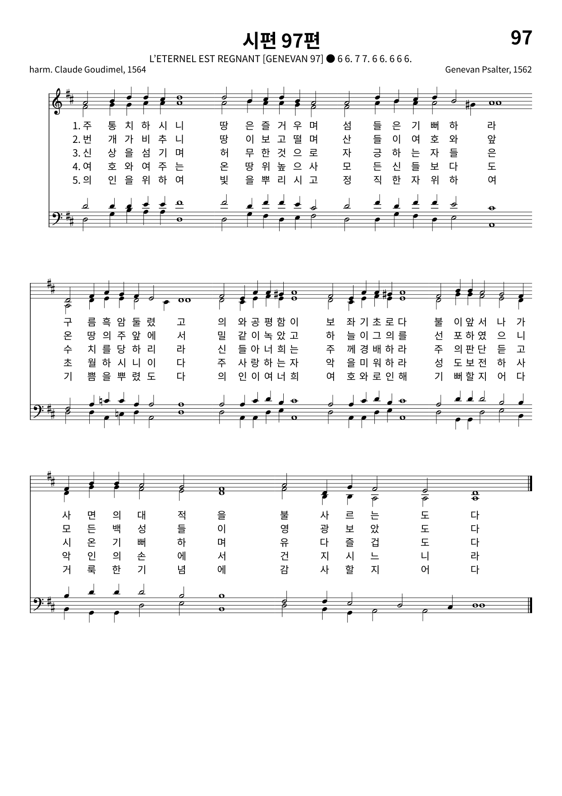

Psalm 97
L’ETERNEL EST REGNANT [GENEVAN 97] · 6 6. 7 7. 6 6. 6 6 6.
English title: The LORD Our God Is King!
Tune: Genevan Psalter, 1562 · Harmony: Claude Goudimel, 1564 · Lyrics: Korean adaptation of Psalm 97 from the Korean Revised Version (AI draft adaptation · not yet theologically reviewed) · 5 stanzas
Score PDF MusicXML (for printing) MusicXML (for accompaniment, with prelude and repeats) Read Psalm 97 (Korean Revised Version)
Score
← Psalm 96 ListAccompaniment (in preparation)Psalm 98 →
Lyrics (Korean)
Stanza 1
주 통치하시니
땅은 즐거우며
섬들은 기뻐하라
구름 흑암 둘렸고
의와 공평함이
보좌 기초로다
불이 앞서 나가
사면의 대적을
불사르는도다
주 통치하시니
땅은 즐거우며
섬들은 기뻐하라
구름 흑암 둘렸고
의와 공평함이
보좌 기초로다
불이 앞서 나가
사면의 대적을
불사르는도다
Stanza 2
번개가 비추니
땅이 보고 떨며
산들이 여호와 앞
온 땅의 주 앞에서
밀 같이 녹았고
하늘이 그 의를
선포하였으니
모든 백성들이
영광 보았도다
번개가 비추니
땅이 보고 떨며
산들이 여호와 앞
온 땅의 주 앞에서
밀 같이 녹았고
하늘이 그 의를
선포하였으니
모든 백성들이
영광 보았도다
Stanza 3
신상을 섬기며
허무한 것으로
자긍하는 자들은
수치를 당하리라
신들아 너희는
주께 경배하라
주의 판단 듣고
시온 기뻐하며
유다 즐겁도다
신상을 섬기며
허무한 것으로
자긍하는 자들은
수치를 당하리라
신들아 너희는
주께 경배하라
주의 판단 듣고
시온 기뻐하며
유다 즐겁도다
Stanza 4
여호와여 주는
온 땅 위 높으사
모든 신들보다도
초월하시니이다
주 사랑하는 자
악을 미워하라
성도 보전하사
악인의 손에서
건지시느니라
여호와여 주는
온 땅 위 높으사
모든 신들보다도
초월하시니이다
주 사랑하는 자
악을 미워하라
성도 보전하사
악인의 손에서
건지시느니라
Stanza 5
의인을 위하여
빛을 뿌리시고
정직한 자 위하여
기쁨을 뿌렸도다
의인이여 너희
여호와로 인해
기뻐할지어다
거룩한 기념에
감사할지어다
의인을 위하여
빛을 뿌리시고
정직한 자 위하여
기쁨을 뿌렸도다
의인이여 너희
여호와로 인해
기뻐할지어다
거룩한 기념에
감사할지어다